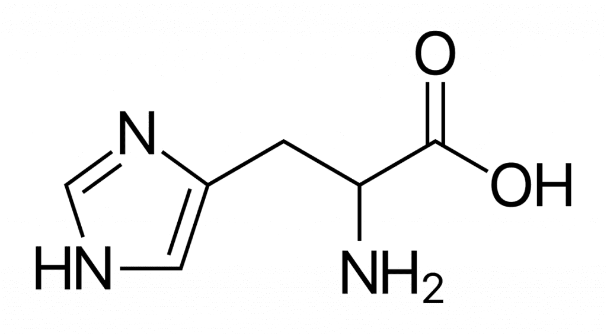

La histidina (abreviado como His o H) es un aminoácido esencial en animales (no puede ser fabricado por su propio organismo y debe ser ingerido en la dieta), mientras que bacterias, hongos y plantas pueden sintetizarlo internamente.2 Es uno de los 20 aminoácidos que forman parte de las proteínas codificadas genéticamente. Las abreviaturas oficiales son His y H. Su grupo funcional es un imidazol, que puede estar cargado positivamente dependiendo del pH del medio. La histidina fue purificada por primera vez por Albrecht Kossel en 1896, en Alemania.
| Simbolo de una letra | Simbolo de dos letras | Imagen del aminoàcidos |
|---|---|---|
| H | His |  |
Informacìon obtenida desde la pagina Wikipedia